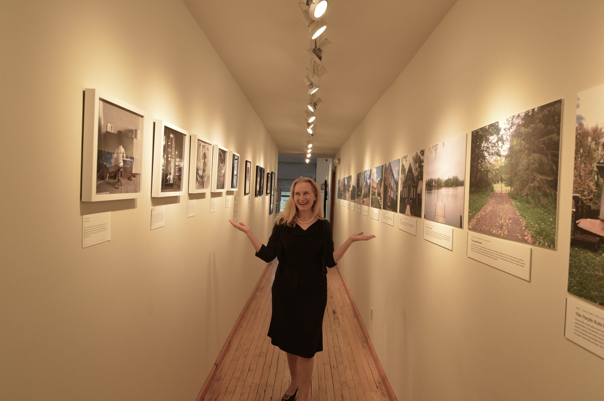

About

I've worked in the arts all my life, committed to artists and their education, and to helping the institutions that train them meet the transformative promise of art in society. I've worked in art schools in the United States, Singapore and Australia, in curatorial, academic and leadership roles, including Columbia University School of the Arts in New York and, most recently, the National Art School in Sydney, where I served as Head of Studies.
In 2025 I established E.C.Balázs Creative Practice, to work full time as an independent curator and filmmaker.
For the past decade my work has centered on The People's Museum for Prince, the museum I founded, which flips the focus of an artist's museum from artist to audience. Curating from public and personal testimony, artworks and stories, the museum is a collective portrait of an artist from the perspective of his audience. It has had two seasons in Minneapolis, in 2018 and 2026, and now lives year-round as the Living Archive. I believe an artist's legacy also lives in the hearts of their audience, and the museum seeks to make visible the impact art has on our lives.
Education
- 2019PhD, Curatorial and Museum Studies, University of Melbourne
- 2006MA, Arts Administration and Policy, School of the Art Institute of Chicago
The People's Museum for Prince
- 2026Roberts Gallery, Capri Theater and ColorWheel Gallery, Minneapolis
- 2019Pop-up at Moon Palace Books, Minneapolis
- 2018Solar Arts Building, Minneapolis
Arts leadership and teaching
- 2022–25National Art School, Sydney. Head of Learning and Teaching; Head of Studies, 2024–25
- 2019–21Assistant Professor, College of Visual and Performing Arts, and Curator, Founder's Gallery, George Mason University, Virginia
- 2016–17Assistant Professor, Arts Management, Purchase College, State University of New York
- 2013–14Programme Leader, Arts Management, LASALLE College of the Arts, Singapore
- 2008–13Director of Academic Administration, Visual Arts, and Curator, LeRoy Neiman Gallery, Columbia University School of the Arts, New York
Writing and presentations
- 2026“There Will Be No Death”: Prince's Afterlife in Minneapolis, with Kristen Zschomler. Chapter 9 of Blackstar Rising and the Purple Reign: The Sonic Afterlives of David Bowie and Prince, ed. Daphne A. Brooks, Duke University Press
- 2026Pop Conference, Los Angeles. The People's Museum: Living Counter-Archive as Joyful Resistance to Legacy Crystallization
- 2026Dance On! International Studies for Prince Symposium, University of Minnesota. Take Me With U: Houses of Prince as Spatial Biography, with Kristen Zschomler, and the research exhibition The Houses of Prince
- 2019Pop Conference, Museum of Pop Culture, Seattle. The People's Museum for Prince: A Curatorial Response to the Mourning of Prince
- 2018Prince from Minneapolis Symposium, University of Minnesota. Communitas Interrupted: The Paisley Park Fence as a Site of Mourning
Press
- 2026NHK World, July
- 2026ABC Radio Melbourne, July
- 2026KARE 11, NBC Minneapolis, June
- 2026Minnesota Star Tribune, June
- 2026The Guardian, “Prince's death made me upend my life and move to his home town,” May
- Full press list